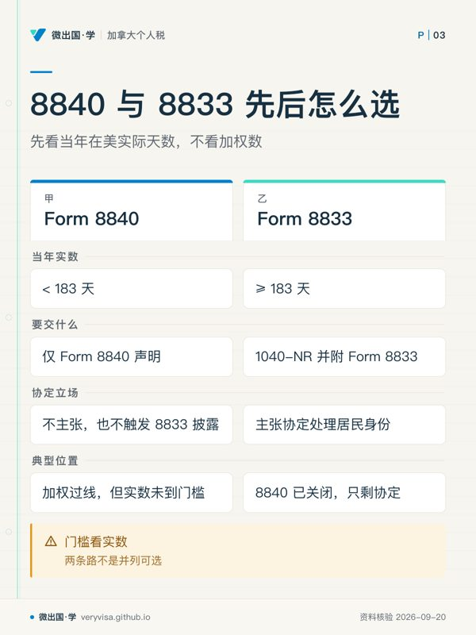

核实日期：2026-09-05｜本页现行口径＝2026 税年（2027 年春申报）。 复核周期：条约层稳定（最后一次实质修订是 2007 年第五号议定书），机制部分按 2027-09-01 复核；页内出现的金额类数字（美国遗产税免税额、境外所得排除额、注册账户额度）属年度指数化项，随年度数字表一并更新。
这一页写给同时被加拿大和美国两套税法「认领」的人：持美国护照或绿卡而住在大温哥华的家庭、每年去亚利桑那过冬的候鸟、拿 TN 签证在西雅图上班而配偶孩子留在素里的跨境通勤者。他们的共同问题不是「我该在哪国报税」——两边都要报——而是「哪一边有权把我当居民、按全球所得征税」。这个问题的答案不在任何一国的税法里，在《加美所得税协定》第四条。读完这一页你应该能做到三件事：把一个具体的人放进「加方判定 → 美方判定 → 是否双重居民 → 走哪一条逃生路」的流程里并走到底；说清 tie-breaker 四级台阶各自的判据和它们必须按顺序走的理由；准确地回答那个最容易答错的问题——协定到底能改变什么，不能改变什么。
✕
先记住这条，后面全部内容都挂在它上面
美国公民永远是美国税务居民。 协定第 XXIX 条第 2 款的保留条款（saving clause）允许美国把自己的公民当作「这份条约不存在」一样征税（IRS（Treasury 条约文本））。所以对一个住在温哥华的美国公民来说，tie-breaker 从来不解决「要不要报 1040」，它只解决另外半个问题：加拿大那一侧算不算居民。把这条记反了，后面每一步都会错。
一、制度设计与底层逻辑：两套互不相认的国内法，加一份仲裁规则
1.1 为什么会有「双重居民」这种东西
税务居民身份是每个国家自己用国内法定义的，两国的定义互不参照、也不需要互相排斥。加拿大用的是「居住联系」这套事实判断——住所、配偶与受养子女、社会与经济联系；美国用的是两条硬测试——绿卡测试与实质居留测试（IRS）。两套尺子量的东西根本不同，所以同一个人被两边同时判成居民，不是异常，是结构性的常态。
一旦两边都认领，就出现了国际税制里最贵的一种冲突：同一笔全球所得被两国各按全球口径征一次。协定不是为了让人少交税而存在的，它是为了在两国之间分配征税权——先决定「谁是居民国」，居民国拿全球征税权，另一国退回「来源国」地位只能对本国来源所得征税。第四条的 tie-breaker 就是这道分配开关。
1.2 谁与谁在博弈
不是「纳税人 vs 税局」，是加拿大税局与美国税局在争同一个人的居民身份，纳税人是这场争夺的标的物。理解这一点能解释很多看起来违反直觉的规则：
- 协定判给美国，加拿大不是「放弃征税」而是把人踢出居民名册。 ITA s.250(5) 的措辞是 notwithstanding（凌驾全法）：按协定成为对方国居民的人，在加拿大税法上直接视同非居民（deemed non-resident，加拿大联邦法规库）。
- 视同非居民与移民离境者适用同一套规则——CRA 自己的原话（CRA）。于是一个只是「填了张表选了个国家」的动作，会触发 ITA s.128.1(4)(b) 的离境视同处置：名下财产视同按公允市值卖出并即时同价买回，当年就要为账面浮盈缴税（加拿大联邦法规库）。
- 美国那一侧则用保留条款把自己的公民锁死，无论协定怎么判都跑不掉 1040。
1.3 错报的法律后果
| 走错的那一步 | 后果 | 出处 |
|---|---|---|
| 用了协定立场却不披露 | Form 8833 不报，按 §6712 罚 $1,000（个人） | IRS |
| 以为协定免掉了信息申报 | FBAR / 8938 / 3520 / 5471 照罚；8938 漏报还把整张报表的诉讼时效从 3 年拉到 6 年 | IRS（代 FinCEN 说明）、IRS |
| 1040-NR 逾期申报 | 不只是罚款——扣除与抵免直接失效，税基从净额变毛额 | IRS |
| 离境年漏报 T1161 | 财产合计超 $25,000 未报清单，按天计罚 | CRA |
| 非居民期间往 TFSA 存钱 | 该笔供款按 1%／月征税，直到取出为止 | CRA |
⚠️
「我在两边都报了税，应该没问题吧」
这句话里藏着本页最常见的误解：报表报齐了，不代表居民身份判对了。 身份判错的后果不出现在「有没有报」上，出现在「按什么口径算」上——全球所得还是来源所得、能不能用标准扣除、外国税收抵免往哪个方向抵。两边都按全球所得报、又各自抵各自的，结果往往是多缴而不是少缴，而且多缴的那部分很难拿回来。
二、2026 税年现行规则与数字
2.1 加方：先分清「事实居民」与「视同居民」两条路
加拿大的判定不是一条门槛，是两条并行的路径，后果不同：
路径一 · 事实居民（factual resident）——靠居住联系判。主要联系是住所（可随时居住的家）、配偶或同居伴侣、受养子女；次要联系是家具、车辆、驾照、银行账户、医保卡、社团会籍等。CRA 官方口径是「本案全部相关事实合并考虑」，包括停留的时长、目的、意图与连续性（CRA）。没有任何一条联系是决定性的，这也是它与美国那套硬测试最大的区别。
路径二 · 视同居民（deemed resident）——ITA s.250(1)(a)：一年内逗留满 183 天即视同居民（加拿大联邦法规库）。两个常被读漏的点：① 「逗留（sojourn）」不含以居民身份居住的日子，所以它是给非居民准备的兜底条款，不是给已经住在这里的人用的；② 视同居民不属于任何省，交的是联邦附加税而不是省税，也拿不到省级抵免。留学生、跨境工作者、临时外派这三类最容易被套错路径。
2.2 美方：两条硬测试 + 四条覆盖机制
美国的缺省状态是「非居民」，除非命中两条测试之一（IRS）：
绿卡测试（green card test）：当年任何一天持有合法永久居民身份即为税务居民。终止条件只有三条，且全部要走 USCIS 或联邦法院：本人书面放弃、USCIS 行政终止、法院司法终止（IRS）。
实质居留测试（substantial presence test, SPT）：当年在美 ≥ 31 天，且「当年天数 ＋ 前一年 × 1/3 ＋ 前两年 × 1/6」≥ 183 天（IRS）。
⚠️
IRS 自己给的算例正好卡在临界点上
官方算例是每年在美 120 天，三年加权 180 天 < 183，不构成居民。很多人据此记成「一年 120 天以内就安全」。实际上把 120 改成 121，加权就是 121 × (1 + 1/3 + 1/6) = 181.5……再往上一天就越线——稳态下每年 122 天即触发。候鸟家庭每年多待一周，性质就变了。
命中测试之后，有四条可以推翻结果的路：首年选择（first-year choice）、非居民配偶视同居民、closer connection 例外、税收协定（IRS）。本页只讲后两条——它们是双重居民真正会用到的两级台阶。
2.3 协定第四条：严格有序的四级台阶
只有当两国国内法都判你是居民时，第四条第 2 款才启动。它的结构是「上一级判不出来才往下走」，不是「综合考虑四个因素」（IRS（Treasury 条约文本））：
| 台阶 | 判据 | 判不出来时 |
|---|---|---|
| 第一级 · 永久住所（permanent home） | 可供全年随时居住的居所，自有或租赁均可。偶尔短住的地方、亲友家的房间、学生宿舍、酒店、雇主提供的临时住处都不算 | 两边都有或两边都没有 → 进第二级 |
| 第二级 · 重要利益中心（centre of vital interests） | 个人与经济关系哪边更近：家庭与社会关系、职业、政治文化活动、营业地点合并判断 | 判不出 → 进第三级 |
| 第三级 · 惯常居所（habitual abode） | 通常、经常、习惯性居住在哪边。天数是重要因素，但「日常生活的常规安排落在哪里」同样重要 | 两边都有或都没有 → 进第四级 |
| 第四级 · 国籍（citizenship） | 是哪一国的公民 | 双重国籍或都不是 → 主管当局协商 |
| 最后手段 · 主管当局 | 加方是 CRA 的主管当局服务处；美方在大企业与国际部之下 | — |
✕
第二级是绝大多数案子的终点，也是最容易被讲错的一级
「有加拿大配偶」在加方判定里是主要居住联系，几乎一锤定音；但到了第二级 tie-breaker，配偶只是「个人与经济关系」的一个因素，要和职业、收入来源、营业地点、社会活动一起权衡。把「加方判据」直接搬进「协定判据」是这一步的头号错误——两者用的根本不是同一张尺子。
2.4 需要标税年的数字：三列表
条约层十八年未动，但挂在判定结果上的数字每年都在变。三张最要紧的表：
表一 · 美国遗产税基础免税额（影响加拿大居民持美国资产者能按比例分到多少统一抵免额）
| 2024 税年（考试口径） | 2025 税年 | 2026 税年现行 | 状态 |
|---|---|---|---|
| 按 TCJA 日落叙事写，普遍预期 2026 年腰斩回约 $7,000,000 | $13,990,000 | $15,000,000 | 腰斩预期已撤销（法律基数被改写并删除日落段）；2025、2026 两个值均已生效 |
出处：IRS。非美籍非居民的法定免税额始终只有 $60,000（对应统一抵免约 $13,000），且不指数化——两个数字差 250 倍（IRS）。
表二 · 境外所得排除额（住加拿大的美国公民最常问的那个数）
| 2024 税年（考试口径） | 2025 税年 | 2026 税年现行 | 状态 |
|---|---|---|---|
| $126,500 | $130,000 | $132,900 | 均已生效；每年指数化 |
出处：IRS。资格测试（税务住所在境外 ＋ 真实居民或实际居留 330 天）是长青机制，只有额度在变（IRS）。
表三 · 加拿大注册账户额度（判定结果一变，这三个账户全部要重新审视）
| 账户 | 2024 税年（考试口径） | 2025 税年 | 2026 税年现行 | 状态 |
|---|---|---|---|---|
| RRSP 供款上限 | $31,560 | $32,490 | $33,810 | 已生效，逐年指数化 |
| TFSA 年度额度 | $7,000 | $7,000 | $7,000 | 已生效，连续四年未变 |
| FHSA 年度／终身 | $8,000／$40,000 | $8,000／$40,000 | $8,000／$40,000 | 已生效，法定值不指数化 |
40
三、实务流程：一个人怎么从头走到尾
3.1 三步判定法
第一步 · 按加拿大国内法判，不看协定。事实居民还是视同居民还是非居民？无论答案是什么，都要走第二步。

第二步 · 按美国国内法判，同样不看协定。是美国公民吗？持绿卡吗？SPT 过线吗？如果三个都不是——到此为止，没有双重居民问题，tie-breaker 不启动。这是最常被跳过的一步：很多人一看到「配偶在美国」就直接开始套 tie-breaker，而美国根本不用「配偶在境内」来判居民身份。
第三步 · 两边都是居民时才启动 tie-breaker，按第二节那四级台阶顺序走。
3.2 逃生路有先后，不是并列可选
这是本页最有实操价值的一张分流图。考试口径把 Form 8840 与 Form 8833 讲成两个都可以试，实际是有门槛的两级台阶（IRS）：
第一级 · Form 8840（closer connection 例外）——硬门槛是当年在美实际天数 < 183 天（当年实数，不是加权数，IRS）。够得着就走这条：它只是一份声明，不需要报 1040-NR，不需要主张协定立场，不触发 8833 的披露义务。适用人群的典型画像就是候鸟：加权过线但当年实数没到 183 天。
第二级 · Form 8833（协定立场披露）——当年实数 ≥ 183 天，8840 这条路直接关闭，只剩协定。要报 1040-NR 并附 8833，依据是 §6114 与财政部条例 §301.7701(b)-7（IRS）。
✕
走到第二级要付的代价，比多数人以为的大得多
协定改的是「按谁的税法算税」，改不了「要不要交表」。 被判为加拿大居民之后，FBAR（境外账户合计超 $10,000）、Form 8938（未婚境内 $50,000／$75,000 起）、Form 5471、Form 3520 全部照报（IRS（代 FinCEN 说明）、IRS）。绿卡持有人还要多担一层：主张协定被当作非美国居民，可能危及绿卡本身的移民法状态，而它换不来任何美国申报义务的豁免。
3.3 各自要交的表
| 判为加拿大居民 | 判为美国居民 | |
|---|---|---|
| 加拿大 | T1 全球所得申报；截止日 4 月 30 日（自雇 6 月 15 日） | T1 非居民申报（只报加拿大来源）；离境年触发 s.128.1(4) 视同处置 ＋ T1161（财产合计 > $25,000） |
| 美国 · 非公民非绿卡 | 1040-NR ＋ 8833；只报有效关联所得 | 1040 全球所得 |
| 美国 · 公民或绿卡 | 仍报 1040 全球所得（保留条款），另附 8833 主张协定居民地位 | 1040 全球所得 |
| 信息申报 | FBAR / 8938 / 3520 / 5471 照报 | 同左 |
| 美国截止日 | 1040：4 月 15 日，住境外自动延到 6 月 15 日（不用申请）；1040-NR：有预扣工资 4 月 15 日，无预扣工资 6 月 15 日；FBAR：4 月 15 日，自动延到 10 月 15 日 | 同左 |
出处：IRS（1、2）、IRS（代 FinCEN 说明）。
ℹ️
延期只延申报，不延缴税
自动延到 6 月 15 日的是交表，不是交钱。利息从 4 月 15 日起照常起算。一个跨境家庭一年里有四个不同的截止日（4 月 15、4 月 30、6 月 15、10 月 15），把它们记成一个是最常见的实操事故。
3.4 要不要主动填 NR73／NR74
CRA 提供两张表征询官方意见：离境用 NR73、入境用 NR74（CRA）。填不填是一个判断题，不是流程题：填了等于主动请税局对你的身份下一个正式结论，而这个结论可能不是你想要的，还会把注意力引到你的报表上。行业里长期的执业建议是「非经 CRA 要求不主动填」，但要注意这是执业判断，不是 CRA 的官方口径——CRA 的页面上没有这句话。真正值得填的情形只有一种：身份本身高度存疑，而你宁可现在拿到一个确定答案，也不愿意几年后被重新评税。
3.5 双重身份年（dual-status year）
搬家那一年，美国这一侧往往是双重身份年：一年劈两段，居民段按全球所得、非居民段只按美国来源所得（IRS）。代价是一串硬限制：不能用标准扣除（只能逐项）、不能用户主身份税率表、不能合报（配偶是美国公民或居民时可另作选择）。这解释了跨境读者一个反复出现的困惑——为什么搬家那年的美国税单特别难看。不是算错了，是双重身份年天生拿不到标准扣除。
四、联邦之外：加拿大省一侧与美方对应表格
BC 省怎么走。 省税跟着「12 月 31 日的居住省」走，所以居民身份判定的第一个下游后果就落在省税上。两个具体后果：① 被判为视同居民（s.250(1)(a) 那条路）的人不属于任何省，交联邦附加税、拿不到 BC 省级抵免；② 离境年用离境当日居住省的税包（CRA），而不是年末的——这一条经常被填反。
美方对应表格清单。 加方每一个动作，美方几乎都有一张镜像的表：
| 场景 | 加方 | 美方 |
|---|---|---|
| 请官方裁定身份 | NR73（离境）／NR74（入境） | 无对应表；靠 8840／8833 自行主张 |
| 主张协定立场 | 在 T1 上按非居民口径申报 | Form 8833（§6114 / §301.7701(b)-7） |
| 天数不够格的例外 | 无 | Form 8840（closer connection） |
| 学生与交流访问者的免计天数 | 无 | Form 8843（不是 8840，两张表常被混用） |
| 非居民卖房被扣款 | ITA s.116：买方代扣毛售价 25%，除非拿到清税证明 | FIRPTA：买方代扣 amount realized 的 15% |
| 非居民收被动所得 | Part XIII 预扣 25%（协定可降） | FDAP 预扣 |
ℹ️
两国在同一件事上做了同一个选择
非居民卖房，加拿大和美国都把代扣责任推给买方——买方不扣，买方自己赔。所以现实里都是买方律师把钱扣住不放，卖方等清税证明或预扣证明才拿得到尾款。差别在基数：加拿大扣毛售价的 25%，美国扣已实现金额的 15%，两边都不是按利得扣，亏本卖也照扣。
五、历史变革：从「各判各的」到「一份十八年没动过的仲裁书」
1980 年的《加美所得税协定》之前，两国之间的双重征税靠 1942 年那份旧公约和各自的单边抵免机制处理，居民身份冲突没有统一的裁决规则。1980 年公约第一次把 tie-breaker 写成有序四级，并配上第 XXIX 条的保留条款——一手给规则、一手给例外，这个结构一直沿用至今。
此后五次议定书里，与本页最相关的是 2007 年第五号议定书（2008-12-15 生效），它重写了第四条第 1 款，给美国公民与绿卡持有人加了一道第三国限定：不是加拿大居民时，只有在美国有实质居留、永久住所或惯常居所，且个人与经济关系比与任何第三国更近，才算美国居民（IRS（Treasury 条约文本））。这条只在三国场景下咬人，纯加美两国场景用不上——知道它存在、也知道它现在不适用，比不知道它更安全。
第五号议定书之后近十八年没有实质修订（IRS）。这在本课里是罕见的：数字层每年都变，条约层十八年不动。年度更新时这一格的成本近乎为零——确认条约文件页上没有新增的议定书条目即可。
反过来说，变的是挂在判定结果上的国内法：美国遗产税免税额从「预期腰斩」变成 $15,000,000、境外所得排除额逐年指数化、加拿大这边 FHSA 从 2023 年才出现而它在美国税法上的定性至今没有官方答案。机制稳定、参数漂移——这是跨境这一块内容最需要读者理解的节奏。
六、案例
案例一 · 素里的候鸟夫妇（人物与数字均为示例）
李先生与李太太是加拿大公民、素里的房主，没有绿卡。过去三年每年在亚利桑那住 130 天。
加方：房子、配偶、社会与经济联系全在 BC，事实居民，没有疑问。
美方：当年 130 天 ≥ 31 天；加权 130 + 130/3 + 130/6 = 130 + 43.3 + 21.7 = 195 天 ≥ 183 → SPT 过线，美国税务居民。
两边都是居民 → 有双重居民问题。 但先别急着套 tie-breaker——先看第一级台阶：当年在美实数 130 天 < 183 天，够得着 closer connection 例外 → 报 Form 8840 即可，不必报 1040-NR、不必主张协定立场、不必报 8833（IRS（1、2））。
常见错报：① 以为「没超过 183 天就不用管」——加权早已过线，8840 不报就是默认接受美国居民身份；② 夫妻只报一份 8840——8840 是按人报的，两个人各报一份；③ 把 8840 当成协定表去附 8833，反而把简单情形复杂化。
把 130 天改成 190 天会怎样：当年实数 ≥ 183，第一级台阶直接关闭，只剩 Form 8833 + 1040-NR，并且从此要处理全套信息申报。一年多待两个月，成本结构完全变了。
案例二 · 温哥华的美国公民工程师（人物与数字均为示例）
Sarah 是美国公民，2019 年移居温哥华，现在自有住房、配偶是加拿大人、两个孩子在本地上学、受雇于一家 BC 公司。在美国只剩父母家的一间旧卧室（偶尔回去住）和几个券商账户。
加方：主要居住联系齐全 → 事实居民。美方：美国公民 → 永远是美国税务居民。双重居民成立，tie-breaker 启动。
第一级 · 永久住所：温哥华的自有住房是永久住所；父母家的旧卧室不构成永久住所（亲友家中的房间被明确排除）→ 第一级就判出来了：加拿大。不需要走到第二级。
结果：Sarah 是协定意义上的加拿大居民。但因为保留条款，她仍是美国公民、仍要报 1040 全球所得；tie-breaker 给她的是加拿大在若干所得类型上的优先征税权，以及在美国那一侧按非居民口径处理部分所得的依据。
账户后果（这一段才是她真正会踩坑的地方）： - RRSP：条约第 XXIX 条第 5 款给了递延依据，现行已做成自动，账户内部增值不必逐年在美国计税（IRS（Treasury 条约文本））。 - TFSA：加拿大免税，美国不免——内部收益要逐年进 1040；而且按 Rev. Proc. 2020-17 §5.04 的用途穷举（医疗／伤残／教育），TFSA 两节都落不进豁免范围（IRS）。 - FHSA：同样落不进豁免——它的用途是购房，不在那三类里。 - ⚠️ 这两行是从条文用途穷举推出的结论，不是 IRS 逐国点名。IRS 从未公布过加拿大账户的清单。产物里只能写成「按 §5.04 的用途穷举，TFSA 与 FHSA 不在豁免范围内」，不能写成「IRS 说 TFSA 要报 3520」。 - RESP／RDSP：分别落进 §5.04 的教育与伤残用途，终身上限也在门槛之内 → 落入豁免。 - 基金与 ETF：加拿大的共同基金与 ETF 几乎全是美国税法上的 PFIC，注册账户不豁免；$25,000／$50,000 的例外只免填表，不免那套惩罚性税。
常见错报：把「加拿大免税」直接等同于「美国也免税」。TFSA 这个名字里的「免税」只对加拿大成立。
案例三 · 列治文的 TN 签证通勤者（人物与数字均为示例）
陈先生持 TN 签证在西雅图受雇，工作日租住在贝尔维尤，周末回列治文的自有住房，配偶与孩子全年住在列治文。当年在美 220 天。
加方：住房、配偶、子女都在 BC → 事实居民。美方：当年 220 天，SPT 过线 → 美国税务居民。双重居民。
当年实数 220 ≥ 183 → 8840 这条路关闭，只能走协定。
第一级 · 永久住所：列治文自有住房是永久住所；贝尔维尤的长期租住也可以构成永久住所（租赁的、可全年随时居住的居所同样算）→ 两边都有，判不出来 → 进第二级。
第二级 · 重要利益中心：配偶与子女在加拿大、社会关系在加拿大；职业与全部就业收入在美国。这一级不是数人头，是权衡——家庭与社会关系落在加拿大、经济关系落在美国。加上他每周回家、日常生活的重心在列治文，通常倾向判为加拿大；但这是一个可争议的判断，不同的事实组合会翻转结果（例如若配偶子女也搬去贝尔维尤，第二级立刻倒向美国）。
如果判给加拿大：报 1040-NR + 8833，只报美国有效关联所得（他的工资仍是美国来源、美国有征税权）；加拿大按全球所得报 T1，用外国税收抵免消除双重征税。如果判给美国：ITA s.250(5) 让他在加拿大视同非居民 → 触发离境视同处置 → 名下非注册投资账户的浮盈当年就要缴税，并且要报 T1161（加拿大联邦法规库（1、2））。
常见错报：只算「哪边省税」而不算离境税。判给美国看起来省了加拿大的高税率，但视同处置那一笔一次性资本利得，经常把三五年的省税差额一次吃光。
七、常见错报与自查清单
-
把 tie-breaker 当成「四选一综合考虑」。 识别方法：如果你的结论里出现「综合来看他和加拿大关系更近」而没有说明卡在第几级，那就是没按顺序走。正确写法永远是「第一级两边都有 → 进第二级 → 第二级判给某国 → 停」。
-
以为协定能免掉信息申报。 识别方法：结论里出现「按协定判为加拿大居民，所以不用报 FBAR／8938」——只要还是美国公民或绿卡持有人，这句话必错。协定改计税口径，不改申报义务。
-
用加方的「配偶是主要居住联系」去跑第二级 tie-breaker。 识别方法：第二级的分析里只提到配偶，没提职业、收入来源、营业地点、社会活动。加方判据和协定判据是两张不同的尺子。
-
把 8840 与 8833 当成并列可选。 识别方法：没有先算「当年在美实际天数」。< 183 天走 8840，≥ 183 天只能走 8833——先算天数，再选表。
-
把 8840 与 8843 搞混。 识别方法：给 F/J/M/Q 签证的学生填了 8840。学生与交流访问者的免计天数走 8843；8840 是给因 closer connection 而主张例外的人用的。
-
算 SPT 时把三年天数直接相加。 识别方法：结果里出现「三年共 390 天，远超 183」。前一年只算 1/3、前两年只算 1/6，不加权就必然高估。
-
绿卡失效当成税务居民身份终止。 识别方法：出现「卡过期了／好几年没入境了，所以不用报」。终止只有三条路——本人书面放弃、USCIS 行政终止、法院司法终止（IRS）。
-
判给美国之后忘记加拿大侧的离境税。 识别方法：只做了美方分析，加方那一栏只写了「非居民」。s.250(5) 视同非居民与移民离境者同规则，视同处置和 T1161 都要走。
-
搬家年在美国用了标准扣除。 识别方法：双重身份年的 1040 上出现标准扣除金额。双重身份年只能逐项扣除。
-
主动填了 NR73／NR74。 识别方法：身份其实并不存疑，却为了「求个安心」寄出了表。除非 CRA 要求或身份高度存疑，否则请官方裁定的下行风险大于上行收益——但要清楚这是执业判断，不是官方规定。
-
非居民期间继续往 TFSA 存钱。 识别方法：判定生效日之后仍有供款记录。这些供款按 1%／月征税直到取出；已有余额继续免税增长，不必关户（CRA）。
-
1040-NR 报晚了还以为只是罚点钱。 识别方法：把逾期成本只算成罚款与利息。逾期会让扣除与抵免直接失效，税基从净额变毛额（IRS）。
术语双语表
| English | 中文 | 一句机制 |
|---|---|---|
| factual resident | 事实居民 | 靠居住联系判定的加拿大税务居民，无固定门槛，按全部事实合并判断 |
| deemed resident | 视同居民 | 一年内逗留满 183 天触发；不属于任何省，交联邦附加税而非省税 |
| deemed non-resident | 视同非居民 | 协定判给对方国的后果；ITA s.250(5)，与移民离境者适用同一套规则 |
| significant residential ties | 主要居住联系 | 住所、配偶或同居伴侣、受养子女这三项，是加方判定的核心 |
| sojourn | 逗留 | s.250(1)(a) 的用词，不含以居民身份居住的日子 |
| green card test | 绿卡测试 | 当年任何一天持有合法永久居民身份即为美国税务居民 |
| substantial presence test (SPT) | 实质居留测试 | 当年 ≥ 31 天且「当年 + 前一年 ×1/3 + 前两年 ×1/6」≥ 183 天 |
| closer connection exception | 更紧密联系例外 | 当年在美实数 < 183 天时可主张的例外，用 Form 8840 声明 |
| tie-breaker rules | 决胜规则 | 协定第四条第 2 款，四级有序判定双重居民归属哪一国 |
| permanent home | 永久住所 | 可供全年随时居住的居所；亲友房间、宿舍、酒店、雇主临时住处不算 |
| centre of vital interests | 重要利益中心 | 个人与经济关系哪边更近，家庭、职业、营业地点合并权衡 |
| habitual abode | 惯常居所 | 通常、经常、习惯性居住的国家；看天数也看生活常规 |
| competent authority | 主管当局 | 四级都判不出时由两国税局协商，加方是 CRA 主管当局服务处 |
| saving clause | 保留条款 | 协定第 XXIX 条第 2 款；美国可把自己的公民当作没有协定一样征税 |
| dual-status year | 双重身份年 | 一年内既是美国居民又是非居民；不能用标准扣除、不能合报 |
| Form 8833 | 协定立场披露表 | 主张协定立场必须附，不报按 §6712 罚 $1,000 |
| Form 8840 | 更紧密联系声明表 | 主张 closer connection 例外用；按人报，夫妻各报一份 |
| Form 8843 | 免计天数声明表 | F/J/M/Q 签证的学生与交流访问者用，不要与 8840 混用 |
| Form 1040-NR | 美国非居民所得税表 | 有预扣工资 4 月 15 日到期，无预扣工资 6 月 15 日到期 |
| Form NR73 / NR74 | 居民身份裁定申请表 | NR73 离境、NR74 入境；非经 CRA 要求通常不主动填 |
| Form T1161 | 离境者财产清单 | 离境时财产公允市值合计超 $25,000 即须报，与是否缴税无关 |
| deemed disposition | 视同处置 | ITA s.128.1(4)(b)：停止成为居民时视同按公允市值卖出并同价买回 |
| taxable Canadian property (TCP) | 应税加拿大财产 | 视同处置的除外项之一；非居民处置时另有 s.116 代扣制度 |
| effectively connected income (ECI) | 有效关联所得 | 与美国境内经营活动有效关联的所得，按累进税率并可扣除 |
| FIRPTA | 外国人处置美国不动产预扣 | 买方按已实现金额预扣 15%，不是按利得 |
| unified credit | 统一抵免额 | 美国遗产税抵免；加拿大居民可按美国资产÷全球资产比例分摊 |
来源
- 加美所得税协定原文（1980 公约 + 议定书 1–5）：https://www.irs.gov/pub/irs-trty/canada.pdf （IRS（Treasury 条约文本））
- 条约文件清单（确认无新增议定书）：https://www.irs.gov/businesses/international-businesses/canada-tax-treaty-documents （IRS）
- 实质居留测试：https://www.irs.gov/individuals/international-taxpayers/substantial-presence-test （IRS）
- 更紧密联系例外：https://www.irs.gov/individuals/international-taxpayers/closer-connection-exception-to-the-substantial-presence-test （IRS）
- 绿卡测试：https://www.irs.gov/individuals/international-taxpayers/alien-residency-green-card-test （IRS）
- 美国税务居民身份判定总览：https://www.irs.gov/individuals/international-taxpayers/determining-an-individuals-tax-residency-status （IRS）
- 双重身份个人的课税：https://www.irs.gov/individuals/international-taxpayers/taxation-of-dual-status-individuals （IRS）
- 境外美国人的申报期限：https://www.irs.gov/individuals/international-taxpayers/us-citizens-and-resident-aliens-abroad （IRS）
- 非居民外国人的课税与 1040-NR 期限：https://www.irs.gov/individuals/international-taxpayers/taxation-of-nonresident-aliens （IRS）
- Form 8833：https://www.irs.gov/forms-pubs/about-form-8833 （IRS）｜Form 8840：https://www.irs.gov/forms-pubs/about-form-8840 （IRS）
- CRA 居民身份判定入口：https://www.canada.ca/en/revenue-agency/services/tax/international-non-residents/information-been-moved/determining-your-residency-status.html （CRA）
- CRA 离境（emigrants）：https://www.canada.ca/en/revenue-agency/services/tax/international-non-residents/individuals-leaving-entering-canada-non-residents/leaving-canada-emigrants.html （CRA）
- ITA s.250（视同居民与视同非居民）：https://laws-lois.justice.gc.ca/eng/acts/I-3.3/section-250.html （加拿大联邦法规库）
- ITA s.128.1（入境视同取得与离境视同处置）：https://laws-lois.justice.gc.ca/eng/acts/I-3.3/section-128.1.html （加拿大联邦法规库）
- TFSA 指南（非居民供款 1%／月）：https://www.canada.ca/en/revenue-agency/services/forms-publications/publications/rc4466/tax-free-savings-account-tfsa-guide-individuals.html （CRA）
- 加拿大居民的美国遗产税门槛：https://www.irs.gov/individuals/international-taxpayers/some-nonresidents-with-us-assets-must-file-estate-tax-returns （IRS）
本页知识卡
不看正文也能拿到这一节的核心内容：先看导读，再看图。点图放大，左右翻页。
- 先看先看每一行右栏的箭头：它决定是否继续。
- 易漏配偶在协定第二层只是一项关系因素，不等同加拿大国内法的主要联系。
- 下一步去练习；问持牌专业人士：哪一层首次足以定案？
- 先看先分清是在判加拿大居民，还是在做协定 tie-breaker。
- 易漏婚姻关系在协定里不是单独终结条件，必须放回整体联系中。
- 下一步去「练习」做同事实双尺对照；边界案带生活与经济联系证据咨询专业人士。

- 先看第一眼只看今年真实在美天数，先定哪扇门还开着。
- 易漏协定不免FBAR、8938、5471、3520；绿卡持有人主张协定还可能危及移民法身份。
- 下一步去「讲解」核两条路径；绿卡或多表申报个案带身份与账户资料找专业人士。